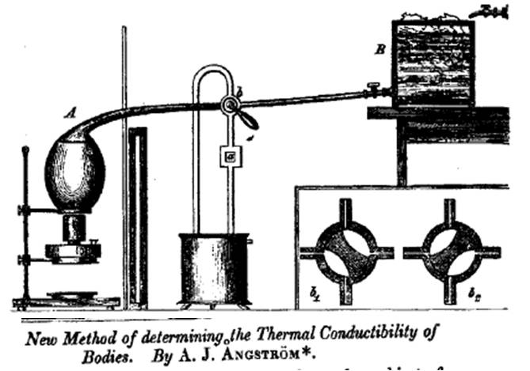
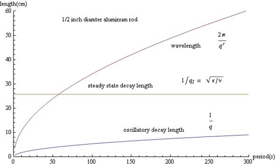
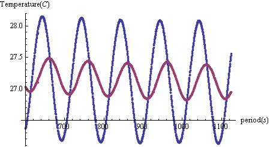

Module 8, Part I: The Angstrom Method¶
Module 8 has two linked parts. This page develops and applies the Angstrom method. Continue with Part II: Conductivity, Heat Loss, And Final Synthesis.
Purpose¶
In this module the TEC controller creates a sinusoidal temperature boundary at the base of the aluminum rod. Thermal diffusion causes the oscillation amplitude to decrease and its phase to lag with distance. Measuring both effects allows you to separate thermal diffusion from heat loss to the air.
Module 8 has three priorities, in this order:
- Implement Angstrom method This is the primary
objective. Set the TEC temperature using PI control to \(T_{\mathrm{set}}(t)=T_a+T_b\sin(\omega t)\). Produce a trustworthy, synchronized record from the TEC
thermistor and rod thermistors
T1-T5, display all six traces live, and preserve the same data with the serial logger. - Understand the Angstrom method. Connect sinusoidal thermal diffusion to amplitude decay and phase lag, and use those relationships to infer thermal parameters.
- Compare experiment and theory. Use fitted traces, spatial trends, residuals, repeated frequencies, and the Module 7 validity checks to decide how well the heat-transport model describes the rod.
The sinusoidal boundary, autonomous schedule, and logger handoff are means of obtaining the six-temperature record required for these three objectives.
Schedule And Due Work¶
| Session | In class | Due |
|---|---|---|
| S18, Mon. Nov. 2 | Three-hour live Angstrom lab: display all six thermistors in the Python GUI while recording the same serial stream on the Fermion logger | Module 8 home preparation; P3 prediction and pilot-plan check |
| S19, Wed. Nov. 4 | Retrieve and verify the logger file; fit pilot amplitudes and phases; build and test the autonomous frequency schedule | Pilot-analysis, logger-verification, and autonomous-run plan check |
| S20, Mon. Nov. 9 | Demonstrate the live-to-autonomous handoff with a one-frequency schedule; launch an instructor-approved multi-frequency run only after the minimum gates pass | Data-readiness and autonomous-run check |
| S21, Wed. Nov. 11 | Fit spatial decay and phase slopes; infer kappa and nu |
A5: Angstrom derivation and model-validity plan |
| S22, Mon. Nov. 16 | Repeat or extend the measurement; test frequency consistency, residuals, and model validity | P4; formative modeling-app check |
Outside-Class Workload Budget¶
| Session | Work | Planned time |
|---|---|---|
| S18 | Read this assignment and review the periodic solution | 60 minutes |
| S18 | Prepare the pilot-run settings and metadata plan | 30 minutes |
| S18 | Total associated with S18 | 1 hour 30 minutes |
| S19 | Continue and check the individual A5 derivation and validity plan | 120 minutes |
| S19 | Inspect pilot fits and prepare the production-run plan | 45 minutes |
| S19 | Total associated with S19 | 2 hours 45 minutes |
| S20 | Complete the individual A5 derivation and validity plan | 120 minutes |
| S20 | Prepare production filenames, metadata, and data-readiness checklist | 45 minutes |
| S20 | Total associated with S20 | 2 hours 45 minutes |
| S21 | Complete the spatial fits, uncertainty, and residual displays | 150 minutes |
| S21 | Document, commit, and push the formative modeling-app checkpoint | 30 minutes |
| S21 | Total associated with S21 | 3 hours |
| S22 | Prepare a repeat run or frequency-consistency and model-validity check | 60 minutes |
| S22 | Total associated with S22 | 1 hour |
The live dual-recording test and handoff rehearsal are completed in class. The long production record may continue as an instructor-approved extended run using the autonomous Arduino and serial logger. Do not leave the apparatus running outside the scheduled protocol or without completing the safety and data-readiness checks below.
Learning Objectives¶
By the end of this module, you should be able to:
- Measure all six temperature histories: display the TEC and
T1-T5live, record the same serial stream on the logger, recover and verify the stored file, and preserve sensor positions, units, timestamps, and run metadata. - Understand and apply the Angstrom method: create and verify a sinusoidal rod-base boundary, explain why amplitude decreases and phase lag increases with position, and fit the data to obtain \(q\), \(q'\), \(\kappa\), and \(\nu\) with units and uncertainty.
- Compare experiment and theory: use per-sensor fits, spatial trends, residuals, frequency consistency, and the finite-length and transverse-Biot checks from Module 7 to judge the one-dimensional model.
- Demonstrate autonomous operation: execute a persistent frequency schedule and make a controlled transition from the live GUI to the Arduino and logger without losing the documented experimental protocol.
Roadmap And Student Work¶
The module follows one experimental argument. First establish and verify the six-channel measurement so that the primary result is a trustworthy set of temperature histories. Then use the Angstrom method to predict and extract amplitude decay and phase lag. Finally, compare those measurements with the model, infer \(\kappa\) and \(\nu\), and test whether the same theory explains all retained sensors and forcing periods.
Before S18: read through the periodic solution, write down your qualitative
predictions, and prepare proposed pilot settings and metadata. This is the
P3 check. Bring your proposed drive period, starting values of \(T_a\) and
\(T_b\), safety limits, and a prediction for how amplitude and phase will
change with distance. This is a planning check, not a separate written
submission.
In class during S18-S20: complete the minimum acquisition, boundary, dual-recording, pilot-analysis, autonomous-schedule, and handoff gates below. The required autonomous schedule may hold one frequency. Rehearse the complete laptop-to-wall-power handoff even if you do not perform the extended run.
During an approved extended run: let the autonomous Arduino execute a
multi-frequency schedule and preserve the complete record, including the
transient after every frequency change. After the production run during
S21-S22: complete the spatial fits,
uncertainty and residual analysis, and model-validity checks. The P4 check is
a minimum successful periodic dataset, as defined below, together with sensor
positions and units, acquisition metadata, and a rod-base waveform check. This
is an in-class data-readiness check, not a separate written submission. State
the criterion you used to decide that the response was settled.
Two-Tier Completion Checklist¶
Complete each minimum gate before proceeding to the next one. The extended tier adds frequency-comparison evidence without changing what counts as a successful minimum Angstrom experiment.
| Gate | Minimum experiment | Extended experiment |
|---|---|---|
| Acquisition | Verify the TEC and T1-T5, their units, common-bath result, any optional correction coefficients, and sensor positions |
Keep the same validated sensor map for every scheduled frequency |
| Boundary | Produce and document a well-tracked sinusoidal rod-base temperature, beginning with a 100-second drive | Optimize the period while keeping the waveform safe and nearly sinusoidal |
| Dual recording | Show that the GUI and logger captured matching records and that the GUI can import the logger file | Repeat the check for every extended-run file |
| Autonomous operation | Store and verify a persistent one-frequency schedule, then demonstrate the documented laptop-to-wall-power handoff | Execute a persistent multi-frequency schedule and preserve every transition |
| Usable data | Retain at least five settled cycles at one frequency with measurable amplitude and phase at three or more rod sensors | Retain usable settled intervals at two or more frequencies; include the 480-second condition only in the approved extended run |
| Analysis | Produce per-sensor fits, \(q\), \(q'\), \(\kappa\), \(\nu\), uncertainties, and residuals for the minimum dataset | Compare independently inferred parameters across frequencies and, optionally, compare with a global \(T(x,t)\) fit |
For the minimum experiment, the response is sufficiently settled when the team's stated quantitative test is satisfied. Suitable tests include stable fitted amplitude and phase in consecutive time windows, no systematic drift in the fit residuals, or agreement between consecutive groups of complete cycles. Do not select a settled interval merely because five cycles have elapsed.
Reuse The Validated Sensor Map¶
Module 7 established the geometry and validated six thermistor measurement chains: one thermistor in the TEC base and five thermistors at measured positions along the 6061-T6 aluminum rod. Keep the same coordinate origin at the first rod hole, channel assignments, common-bath result, any optional correction coefficients, measured diameter, analysis length \(L\) from the first hole to the tip, and sensor positions for the Angstrom experiment. Do not move a rod sensor without updating the sensor map and its position uncertainty.
The thermistor embedded in the TEC measures the driven actuator, but it is not the rod boundary at \(x=0\) and is not one of the five rod coordinates. Rod thermistor 1 in the first hole measures \(T(0,t)\), the boundary condition used in the Angstrom model. You will use the Angstrom measurement to determine thermal conductivity rather than substitute a supplied final value. Literature values of \(k\) may guide planning and model-validity checks.
This choice of origin does not change the Angstrom result. Shifting \(x=0\) changes the reference amplitude and phase, but the fitted spatial decay and phase coefficients depend on amplitude ratios, phase differences, and sensor separations. Use the first hole as \(x=0\) consistently in every plot and fit.
In principle, the Angstrom method needs temperatures at only two distinct rod positions. The experiment could therefore be repeated for several pairs of positions. Five simultaneous rod measurements are preferable because they provide multiple amplitude and phase differences in one run, support spatial fits and residual checks, and avoid comparing pairs acquired under different room or boundary conditions.
Before the pilot run, verify that the saved diagram or photograph identifies the TEC-base channel, the five rod channels, the positive \(x\) direction, all five measured rod positions, the analysis length from the first hole to the tip, the overall physical length, and the measured diameter.
Periodic Solution¶

Historical drawing of Angstrom's method for determining thermal conductivity. The course replaces the alternating hot and cold reservoirs with a TEC-controlled sinusoidal boundary temperature.
Take a few minutes to look at the 1863 English translation of Angstrom's original work. You are not expected to follow every line. Focus on the apparatus, the recorded observations, and the way the measurements are connected to the theory. Recognize the kinship between Angstrom and ourselves; the scientific process isn't different 165 years later, although the tools have progressed.
Start With The Rod Equation¶
Use excess temperature \(\theta=T-T_\infty\) and the rod equation
Here \(\kappa\) is thermal diffusivity in \(\mathrm{m^2/s}\) and \(\nu\) is the lateral heat-loss rate coefficient in \(\mathrm{s^{-1}}\). Every term has units of K/s. We assume constant material properties, linear heat loss, constant environmental temperature, and a temperature uniform across each cross section. Module 7 denoted thermal diffusivity by \(\alpha\); here \(\kappa\equiv\alpha=k/(\rho c)\). The symbol \(T_\infty\) does not mean the temperature at the other end of the universe. It is the temperature of the surrounding room, which we treat as a large thermodynamic reservoir whose temperature is not changed appreciably by the rod. We initially treat the rod as semi-infinite, with \(x\geq0\).
Use the measured temperature T1 at the analysis base as
where \(\tau\) is the period in seconds and \(\omega\) is angular frequency in rad/s. The TEC and its embedded thermistor create and monitor the forcing, but the measured rod temperature at the first hole supplies this boundary condition. We seek the settled periodic response after initial transients decay. If the base oscillates about a mean above room temperature, the full solution also contains a stationary mean profile. By linearity, we can solve for that profile and the oscillating component separately; the derivation below gives the oscillating component.
Before continuing, make a qualitative prediction. Sketch temperature versus time at the base and at two increasing distances along the rod. Predict which features remain the same, which change with distance, and what a shorter drive period should do to the attenuation and phase lag. Return to this sketch after the derivation and pilot run.
Preview The Six-Sensor Angstrom Experiment¶
Open the interactive six-sensor Angstrom simulator. This version extends the finite-rod simulator used in Module 7. Select the Angstrom sinusoidal drive and begin with
The simulator displays the driven temperature and the live responses at six
positions along the finite rod. Compare their amplitudes and phase delays, and
then change the forcing period to predict which sensor positions will provide
measurable signals in the physical experiment. The simulator labels its six
modeled rod positions T0-T5; in the apparatus, the embedded TEC sensor is
separate and the five rod sensors are named T1-T5.
Suggested simulation-only exploration. The initial run now uses these settings. Let the response settle into a repeatable periodic state:
This simulated setpoint ranges from \(24^\circ\mathrm{C}\) to \(56^\circ\mathrm{C}\); it is an exploration setting, not permission to exceed the \(55^\circ\mathrm{C}\) hardware limit.
For each modeled position, estimate the time-averaged temperature
\(\overline{T}(x)\), oscillation amplitude \(B(x)\), and phase lag relative to
T0. Look for four features:
- The mean excess temperature, \(\overline{T}(x)-T_\infty\), falls approximately exponentially with position.
- The oscillation amplitude \(B(x)\) also falls approximately exponentially, but generally with a different decay coefficient.
- The phase lag increases monotonically downstream: each successive temperature trace reaches corresponding points in its cycle later.
- Compare the PWM phase with both the requested setpoint and the temperature traces. The PWM should generally lead the measured thermal response because actuator effort precedes the temperature change it produces. Its phase relative to the requested setpoint is not universal: it depends on the controller type and gains, the TEC and rod dynamics, and any saturation. A P-only command is in phase with the instantaneous error; adding the integral term changes the command phase. Measure these phase relationships rather than assuming that PWM always leads the setpoint.
Test the two exponential statements by plotting \(\ln[\overline{T}(x)-T_\infty]\) and \(\ln B(x)\) against \(x\). Compare their slopes, and inspect whether points near the finite tip depart systematically from straight lines.
What model is being simulated?
This simulator uses the same finite-difference rod and dynamic TEC model as the Module 7 simulator. Its rod elements obey
with a finite, zero-flux far tip. The TEC has separate hot- and cold-side
thermal states and includes Peltier transport, Joule heating, internal
conduction, rod contact, and heat-sink loss. A PID controller drives bounded
heating and cooling PWM so that the T0 sensor follows the requested
sinusoidal setpoint. Each of the six displayed thermistors has the same
first-order sensor lag.
Unlike the semi-infinite analytic solution derived below, the numerical model retains the finite tip and actuator dynamics. It therefore lets you explore where the exponential amplitude and phase relations work well and where the ideal Angstrom assumptions begin to fail.
Full complex-exponential derivation
Guess A Complex Exponential¶
A complex exponential is useful because differentiation returns a constant times the same function. Guess
The physical temperature is the real part of this expression. Because the equation is linear with real coefficients, the real part of a complex solution also satisfies the equation. Allowing \(s\) to be complex lets us describe both amplitude decay and phase delay along the rod. At \(x=0\), taking the real part gives the specified cosine boundary condition.
The derivatives are
Substitution into the rod equation and cancellation of the common exponential turn the differential equation into algebra:
The two spatial solutions are \(e^{-sx}\) and \(e^{+sx}\). Choose the square root with positive real part and discard the growing solution \(e^{+sx}\), because the temperature oscillation must vanish far from the driven end.
Separate Amplitude Decay From Phase Delay¶
Write \(s=q+iq'\), with \(q>0\) and \(q'>0\) for positive driving frequency. The prime in \(q'\) is part of its name, not a derivative. Squaring gives
Equating real and imaginary parts with \((\nu+i\omega)/\kappa\) gives
To find the two coefficients explicitly, use
Thus \(q^2+q'^2=\sqrt{\nu^2+\omega^2}/\kappa\). Adding and subtracting the expressions for this sum and for \(q^2-q'^2\) gives the amplitude-decay and phase coefficients, both in inverse meters:
The frequency of the drive therefore sets two useful spatial scales. The oscillatory decay length \(1/q\) is the distance over which the oscillation amplitude falls by a factor of \(e\). The spatial wavelength \(2\pi/q'\) is the distance over which the oscillation accumulates a full \(2\pi\) phase lag. For comparison, the stationary temperature profile has decay length \(1/q_1=\sqrt{\kappa/\nu}\).

Characteristic lengths calculated for a half-inch-diameter aluminum rod. Longer periods penetrate farther into the rod but produce less phase change per unit length. Shorter periods produce more phase change per unit length but also attenuate more rapidly. The experimental period should give both a measurable amplitude and a resolvable phase difference across several sensors.
Take The Real Part¶
The complex solution can now be written
Taking its real part gives
At every position, temperature oscillates at the imposed frequency. Its amplitude decreases as \(e^{-qx}\) and it lags the base by \(q'x\) radians, corresponding to a time delay \(q'x/\omega\). This wave-like pattern is a diffusive response, not ordinary wave propagation.
Allowing an arbitrary base amplitude \(B_0\) and phase \(\phi_0\) gives the form used to fit the experiment:
For the boundary condition chosen above, \(B_0=\theta_b\) and \(\phi_0=0\).
Recover Diffusivity And Heat Loss From Measurements¶
For two sensors separated by \(\Delta x=x_2-x_1>0\), let their oscillation amplitudes be \(B_1>B_2\), and let the downstream sensor lag by \(\Delta\phi=\phi_1-\phi_2>0\) radians after phase unwrapping. Then
With several sensors, fit the slopes of log amplitude and unwrapped phase versus position. Rearranging the real- and imaginary-part equations gives the useful inverse relations:
Numerical sanity check
For example, suppose a 100-second run gives \(\omega=0.0628\ \mathrm{rad/s}\), \(q=25\ \mathrm{m^{-1}}\), and \(q'=18\ \mathrm{m^{-1}}\). Then
and
Use this only as a unit and order-of-magnitude check; it is not a supplied result for the course rod.
Amplitude attenuation and phase delay provide two independent measurements, allowing us to separate thermal diffusivity from lateral heat loss. Thermal conductivity follows from \(k=\rho c\kappa\), where \(\rho\) is density in \(\mathrm{kg/m^3}\) and \(c\) is specific heat capacity in \(\mathrm{J/(kg\,K)}\); thus \(k\) has units \(\mathrm{W/(m\,K)}\).
As a check, with no lateral loss, \(\nu=0\), so
Positive lateral heat loss makes \(q>q'\). Therefore a fitted result with \(q\leq q'\), a negative \(\nu\), or strongly frequency-dependent \(\kappa\) is evidence to investigate the data, uncertainty, settling criterion, or model assumptions rather than a number to repair silently. A shorter driving period produces stronger attenuation and phase change per unit distance. These expressions describe the settled periodic response; they do not include startup transients. A finite rod generally requires both spatial exponentials to satisfy its far-end boundary condition.
These equations use a one-dimensional, semi-infinite rod. Before selecting sensors for the fit, carry forward the finite-length error and transverse-Biot checks from Module 7. State which sensors and conditions satisfy your chosen approximation tolerances, and then use the measured residuals and frequency-consistency test to determine whether those approximations were adequate in practice.
Experimental Notation¶
| Symbol or channel | Meaning |
|---|---|
| \(T_\infty\) | Measured room temperature, treated as the surrounding thermal reservoir |
| \(T_a\) | Requested mean TEC setpoint temperature |
| \(T_b\) | Requested TEC setpoint amplitude |
\(T_{\mathrm{TEC}}\) or TEC |
Temperature measured by the thermistor embedded in the TEC base |
\(T(0,t)\) or T1 |
Temperature at the first rod hole, which defines the analysis boundary \(x=0\) |
T2-T5 |
Temperatures at the four downstream rod sensors |
| \(a_i\) | Mean temperature obtained by fitting rod sensor \(i\) |
| \(B_i\) | Oscillation amplitude obtained by fitting rod sensor \(i\) |
| \(\phi_i\) | Unwrapped phase obtained by fitting rod sensor \(i\) |
| \(\tau\), \(\omega=2\pi/\tau\) | Forcing period and angular frequency |
| \(q\) | Spatial amplitude-decay coefficient obtained from \(\ln B_i\) versus \(x_i\) |
| \(q'\) | Spatial phase coefficient obtained from unwrapped \(\phi_i\) versus \(x_i\) |
| \(\kappa\) | Thermal diffusivity inferred from \(q\), \(q'\), and \(\omega\) |
| \(\nu\) | Convective side-loss rate inferred from \(q\), \(q'\), and \(\omega\) |
| \(r=\chi_{\mathrm{heat}}/\chi_{\mathrm{cool}}\) | Measured heating-to-cooling response ratio used in the feedforward compensation |
In this module, \(\tau\) denotes the forcing period. It is not the thermal relaxation time denoted by \(\tau\) in Module 6.
Stage 1: Establish The Boundary Condition¶
Drive the TEC with a sinusoidal setpoint
Here \(T_a\) is the mean TEC setpoint, \(T_b\) is its oscillation amplitude, \(\tau\) is the forcing period, and \(\omega\) is the angular frequency. For the first classroom run, use the suggested values
The resulting requested TEC profile is
This has a mean of \(40^\circ\mathrm{C}\), an amplitude of \(8^\circ\mathrm{C}\),
and a range from \(32^\circ\mathrm{C}\) to \(48^\circ\mathrm{C}\). We assume an
initial room temperature of approximately \(22^\circ\mathrm{C}\) to simplify the
starting protocol, but you must measure and record the actual room temperature
for the excess-temperature analysis. The requested TEC temperature is the
controller input; the measured temperature T1 at \(x=0\) is the
boundary condition used in the Angstrom analysis.
Compensate The Heating-Cooling Asymmetry¶
Generating this sinusoid requires the TEC to alternate between heating and cooling. Your Module 4 measurements showed that equal-magnitude PWM commands do not produce equal temperature responses in the two directions. Let \(\chi_h\) and \(\chi_c\) denote the positive magnitudes of the measured heating and cooling susceptibilities, respectively, and define
A useful starting estimate is \(\chi_c\approx\chi_h/2\), so \(r\approx2\): cooling may require approximately twice the PWM magnitude of heating for the same temperature response. Use the ratio measured for your own TEC rather than assuming that it is exactly two.
The feedback response is slow enough that the controller should not rely on the integral term alone to discover this asymmetry. First calculate the ordinary signed PI command
Then apply the measured heating-cooling ratio before limiting the command:
The sign of \(u_{\mathrm{cmd}}\) selects the H-bridge direction, and its magnitude sets the PWM after clamping it to the safe range. This measured, direction-dependent scaling is a static actuator compensation, also called static feedforward compensation. It linearizes the unequal heating and cooling gains by supplying the known extra cooling command immediately; it does not predict the rod's dynamic response. PI feedback corrects the remaining tracking error. Apply saturation and anti-windup to the compensated command, and never energize both H-bridge direction inputs simultaneously.
- Measure and record room temperature before starting the run.
- Start with the 100-second minimum experiment specified in the two-tier checklist. This is the period used in the course-data figure in Stage 6, so you can compare your first observations with a known example. Its short period lets you observe many cycles, check phase lag, and debug the acquisition system promptly.
- Enter the measured values of \(\chi_h\) and \(\chi_c\), calculate \(r\), and verify that a negative controller command receives the cooling multiplier before PWM saturation.
- Tune PI settings so the TEC drive produces a rod-base temperature
T1at the first hole that is close to sinusoidal without strong clipping, drift, or phase jumps. - Record the TEC setpoint, measured TEC temperature, raw PI command,
compensated signed PWM, direction, and all rod
temperatures,
T1-T5. - Quantify the TEC tracking and the sinusoidal quality of
T1with amplitude, phase, and residual measures. Report the measured-to-requested amplitude ratio and the phase lag ofT1relative to the requested setpoint. - Use the measured temperature
T1, rather than the requested TEC setpoint or TEC-thermistor temperature, as the model boundary condition. - Plot raw \(u_{\mathrm{PI}}\) against applied signed PWM. Identify the two actuator slopes, saturation, and any region in which the compensation does not linearize the heating and cooling response adequately.
Optimize The Waveform From The Pilot Data¶
The best waveform is the one that produces both measurable attenuation and a resolvable phase lag across several rod sensors while remaining safe and close to sinusoidal. Use the live display and pilot fits to adjust it:
- Aim for the farthest retained sensor to have an oscillation amplitude of at least about 10-20% of the amplitude at \(x=0\). A smaller response may be difficult to distinguish from sensor noise.
- Aim for an unwrapped phase lag from the first to the farthest retained sensor of roughly 0.5-2 radians. This is a planning target, not a fit constraint.
- If distant oscillations are too small, first try a longer period. If all sensors have nearly the same phase, try a shorter period.
- If the measured waveform clips, flattens, or tracks poorly, reduce \(T_b\), reduce the mean temperature, or retune the controller before collecting production data.
- If the oscillation is clean but too small at every sensor, increase \(T_b\) cautiously. Keep the measured rod-base temperature below \(55^\circ\mathrm{C}\) and retain margin for overshoot.
- Keep \(T_a\) and \(T_b\) fixed while comparing periods unless the pilot data show that a change is necessary. This makes frequency comparisons easier to interpret.
Use the minimum and extended period requirements in the two-tier checklist. Choose additional periods from the pilot evidence rather than from a fixed list alone.
Stage 2: Three-Hour Live GUI And Logger Lab¶
The first Angstrom run is both a physics experiment and an acquisition-system test. Connect the Arduino to the laptop and connect the Fermion logger as shown on the Hardware page. The logger receives the Arduino transmit line; leave the logger transmit pin disconnected so that it does not compete with commands sent from the Python GUI to the Arduino.
Revise the Arduino sketch and Python GUI so that one serial record contains, at minimum,
time_ms,run_state,step,Ta_C,Tb_C,period_s,setpoint_C,TEC_C,T1_C,T2_C,T3_C,T4_C,T5_C,uPI_pwm,heating_to_cooling_ratio,signed_pwm
The GUI must display the TEC thermistor and all five rod thermistors live,
display the requested setpoint and PWM output, and save a local copy of every
complete record it receives. The Arduino must send exactly the same complete
records through Serial.print() to both the laptop USB interface and the
logger. Do not create a separate reduced data stream for the logger.
During this run, use the sinusoidal setpoint and starting parameters established in Stage 1, adjusting them only through the documented optimization procedure.
Use one three-hour laboratory block as follows:
- Verify channel names, units, sensor positions, the Module 7 common-bath result, any optional correction coefficients, and safe TEC operation before beginning the timed run.
- Start the Python GUI and the logger. Confirm that all six temperatures, setpoint, and PWM are updating plausibly.
- Observe the live spatial response for the remainder of the run. Record changes to controller settings or forcing parameters as explicit events; do not make undocumented changes.
- Watch for clipping, implausible sensor values, loss of serial records, excessive temperature, and poor base tracking. Stop the run if a safety limit or the physical thermal cutoff is reached.
- Preserve both the GUI file and the logger file as raw data. The three-hour record is a pilot and commissioning record even if the rod has not yet reached its settled periodic response.
Suggested Copilot prompts for the Arduino sketch and Python GUI
For the existing tested Arduino sketch:
Extend this sketch without removing its working PI control or safety limits. Print one documented CSV record containing elapsed milliseconds, operating state, schedule step, requested sinusoid parameters, setpoint, TEC temperature, five rod temperatures, raw PI command, cooling compensation ratio, and applied signed PWM. Compute the signed PI command, multiply negative commands by the measured ratio \(r=\chi_h/\chi_c\), and then apply PWM saturation, direction selection, safety limits, and anti-windup. Never energize both H-bridge directions. Use one
Serialstream so the Uno USB interface and a receive-only serial logger record identical lines.
For the existing tested Python GUI:
Extend this GUI without removing its current controls. Parse and validate the new CSV record, display the TEC and five rod thermistors live on a common time axis, display setpoint and PWM, report malformed or missing records, and save every unmodified valid record to a timestamped local CSV file.
Stage 3: Verify Logger Storage And GUI Retrieval¶
At the end of the live run, set TEC output to zero, close the GUI cleanly, allow the logger to finish its last write, and remove power before connecting the logger USB receptacle to the laptop. The Fermion enters USB storage mode when connected to a USB host and does not log in that mode.
Add an Import Logger File action to the GUI. It may use a normal file chooser; the GUI does not need to communicate with the logger through a custom protocol. The imported file must pass the same parser and validation checks as live data. Display the imported temperatures, setpoint, and PWM, and report the number of valid, malformed, duplicated, and missing records.
Verify all of the following before proceeding:
- The logger file opens through the GUI and contains the expected columns and units.
- Its first and last records and approximate duration agree with the run log.
- A common interval recorded by both systems gives the same measurements.
- Restarting the Arduino or logger creates an identifiable new run or file and does not silently overwrite an earlier production file.
- The raw logger file is copied unchanged into
data/module_08/.
Stage 4: Build And Test The Autonomous Frequency Schedule¶
The Python GUI controls the pilot run, but it will not be present during an autonomous run. Every team must revise the GUI and Arduino code so the GUI can define a sequence of schedule steps. Each step must specify at least its duration, \(T_a\), \(T_b\), and either \(\omega\) or the period. The Arduino, not Python, must advance the schedule and calculate the setpoint during autonomous operation.
The schedule must remain present after Arduino power is removed. Either compile the approved schedule into a separately named autonomous sketch or have the GUI send it once to nonvolatile Arduino storage and then read it back for verification. Values held only in Arduino RAM do not survive the power transition. Do not write the schedule to EEPROM on every sampling cycle.
Keep the sinusoidal phase continuous when the frequency changes so that the requested boundary temperature does not jump merely because a new schedule step begins. At every step transition, print a metadata/event line and include the active step and forcing parameters in subsequent data records. Preserve the transient after each frequency change; the analysis will later identify the settled interval for that frequency.
Before any autonomous run, test an accelerated one-frequency schedule while the GUI and logger are both attached. Demonstrate startup, safe completion, correct metadata, and logger retrieval. If you plan an extended run, also demonstrate at least two automatic frequency changes before restoring the intended durations and verifying the final schedule.
For a minimum successful experiment, the autonomous schedule may hold one well-resolved frequency long enough to satisfy the settled-data criterion. An extended schedule may sample periods such as 100, 180, 240, 300, and 480 seconds while initially retaining the same \(T_a\) and \(T_b\). Longer periods penetrate farther along the rod but produce less phase change per unit length. Use the pilot data and stated settling criterion to choose step durations; do not assume that every frequency settles on the same schedule.
Suggested Copilot prompt for the autonomous schedule
Add a persistent autonomous schedule to this working Arduino/Python system. Each step contains duration, mean temperature, sinusoidal amplitude, and period. Let the GUI edit, send, and read back the schedule. Let the Arduino validate and store it, execute it without Python after a reboot, maintain continuous sinusoidal phase when the period changes, print step metadata in every CSV record, preserve all existing safety limits, and finish with zero TEC output. Do not write repeatedly to EEPROM inside the sampling loop.
Stage 5: Rehearse The Live-To-Autonomous Handoff¶
The classroom run and autonomous run are separate records. Every team must demonstrate this handoff using at least a one-frequency schedule. A short power gap will perturb the rod, so the autonomous file must retain the new startup transient and the analysis must exclude it until the response satisfies the stated settling criterion. Minimize the gap, but do not bypass a safe shutdown.
- While still connected to the laptop, load or store the final autonomous schedule, read it back, and confirm the logger is receiving valid records.
- Record the wall-clock handoff time, schedule version, code commit, intended logger filename, and all power-supply and safety settings.
- Command zero TEC output and turn off the separate TEC supply.
- Close the GUI, close the logger file using its SAVE input if connected, and wait several seconds for the final write.
- Remove Arduino power, disconnect the Arduino USB cable from the laptop, and connect it promptly to the approved USB wall supply. Do not connect two USB power sources to the Uno.
- Restore the separate current-limited TEC supply. On reboot, the Arduino must wait for the logger to initialize, print a new run header, load the verified schedule, and begin at schedule step 1 without Python.
- Confirm the expected Arduino and logger indicators and complete the instructor's unattended-run safety check before leaving the apparatus.
Rehearse this entire sequence in class. Measure and report the power-off gap. The acceptance criterion is not zero interruption; it is a short, documented, repeatable transition followed by a recognizable autonomous run whose startup transient can be excluded honestly.
Stage 6: Pilot Analysis And Experiment Plan¶
For each sensor, fit
With this convention, a downstream phase lag appears as a smaller unwrapped value of \(\phi_i\). Therefore a plot of unwrapped phase versus position has slope \(-q'\). Reversing the sinusoid convention reverses the phase signs but must not change the inferred physics.
The experimental example below shows temperatures measured at two rod positions. The traces have the same temporal frequency, while the downstream response has a smaller amplitude and reaches each peak later.

Course data acquired with a 100-second forcing period, showing the two observables used by the Angstrom method: amplitude decay and phase lag. Fit each trace independently to obtain \(B_i\) and \(\phi_i\); spatial fits of \(\ln B_i\) and unwrapped \(\phi_i\) then determine \(q\) and \(q'\).
- Remove the initial transient or justify the selected fitting interval. State what evidence you used to decide that the response was settled.
- Fit at least five complete settled periods.
- Plot the data and fitted sinusoid for every sensor.
- Plot amplitude
B_iversus position on a logarithmic vertical scale. - Unwrap phase and plot phase versus position.
- Confirm one production period that satisfies the minimum-data gate. If the pilot evidence supports an extended experiment, select additional periods for which several sensors retain measurable amplitude and phase differences.
Your experiment plan must state the period, mean, amplitude, run duration, sampling interval, safety limits, settling criterion, channels, files, and the tests you will use to decide whether the run is usable.
Stage 7: Minimum And Extended Production Data¶
- First secure the minimum dataset defined in the two-tier checklist: at least five complete settled cycles at one usable forcing period and measurable amplitude and phase at three or more rod sensors.
- If the minimum dataset passes its quality checks, execute the approved extended schedule. Retain each transition and identify the settled interval independently for each additional frequency.
- Keep the rod geometry and sensor map unchanged.
- Record room temperature and check for drift.
- Preserve raw data. Apply any optional correction coefficients and all exclusions in analysis code, not by overwriting the original file.
- Record every restart, file boundary, schedule transition, safety event, and departure from the approved protocol.
Stage 8: Spatial Fits And Modeling-App Draft¶
Fit
Your Python app, notebook, or script must visibly show:
- imported raw data and selected fitting interval,
- TEC tracking and the measured rod-base waveform,
- sinusoid fit for every retained sensor,
- amplitude and unwrapped phase versus position,
- fitted
qandq_primewith units and uncertainty, - calculated
kappaandnu, - residuals and any excluded data with justification,
- the finite-length and transverse-Biot-number checks that justify the one-dimensional semi-infinite analysis for the retained sensors.
Use the two-stage analysis above as the primary method: first fit each temperature trace to obtain \(B_i\) and \(\phi_i\), and then fit their spatial dependence. This makes individual sensor behavior, phase unwrapping, and exclusions visible. As an optional model-validity extension, fit all retained \(T_i(t)\) data globally with one shared set of spatial parameters and compare the resulting \(q\), \(q'\), residuals, and uncertainties with the transparent two-stage result.
Modeling-App Draft And Evidence¶
Evidence To Save During S18-S22¶
Preserve the requested and measured boundary waveforms, controller settings,
sensor map, raw pilot and production data, fitting intervals, exclusions,
intermediate fit parameters, residuals, and exact code version. In your own
course repository, use docs/module_notes/module_08_angstrom.md,
data/module_08/, and docs/figures/module_08/. Never replace raw
measurements with processed data.
A5: Angstrom Derivation And Model-Validity Plan¶
- Type: individual, 10 points
- Due: Wednesday, November 11, at 9:05 AM
- Moodle file:
A5_Lastname.pdf - Repository file:
docs/assessments/a5_angstrom_derivation_plan.md
Submit the amplitude/phase derivation, inverse relations for kappa and nu,
dimensional checks, justified acquisition plan, and the finite-length and
transverse-Biot checks carried forward from Module 7. State explicitly whether
the retained sensors support the proposed one-dimensional analysis.
Formative Modeling-App Check¶
There is no separate modeling-app paper. Keep the team note at
docs/module_notes/module_08_modeling_app.md and authoritative runnable app,
script, or notebook under python/analysis/. Show it during the scheduled
progress check; its code, plots, and residuals become part of C6 and F1.
Submit runnable code, a short README with the exact command or procedure, the
data file or stable link, intermediate plots, preliminary kappa and nu, the
finite-length and transverse-Biot checks, and a note describing any AI
assistance. Every team member must be able to explain the input format, the
sequence of fits, and why the selected one-dimensional approximation is
acceptable or not.
A5 Rubric¶
| Criterion | Points |
|---|---|
| Periodic amplitude and phase relations and inverse equations are correct | 2 |
| Units and sign conventions are explicit and consistent | 2 |
| Drive period, sampling, settling, sensors, and safety limits are justified | 2 |
| Finite-length, transverse-Biot, and data-based validity checks support a clear conclusion | 2 |
| Individual PDF and cited Git checkpoint are clear and on time | 2 |
The formative app is ready when it loads documented raw data; displays
per-sensor fits, amplitude, unwrapped phase, and residuals; reports q,
q_prime, kappa, and nu with units and uncertainty; and documents
exclusions, approximation checks, run instructions, and AI assistance.
How The Learning Objectives Are Assessed¶
| Learning objective | Evidence |
|---|---|
| 1. Measure all six temperature histories | Three-hour live display, matching GUI/logger records, verified logger-file import, validated sensor map, required one-frequency autonomous schedule and handoff demonstration, and complete run metadata |
| 2. Understand and apply the Angstrom method | P3, base-tracking plot, A5 derivation, and pilot and production amplitude and phase fits yielding \(q\), \(q'\), \(\kappa\), and \(\nu\) |
| 3. Compare experiment and theory | P4, residuals, spatial and frequency consistency, Module 7 approximation checks, and the C6 explanation |
| 4. Demonstrate autonomous operation | Persistent schedule demonstration, documented live-to-autonomous handoff, and measured handoff gap |